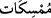

bildiğinize göre, o halde haber verin bana, Allah bana bir zarar vermek istese bu
ilahlarınız bendeki bu belâ ve zararı kaldırıp savabilir mi? Elbette savıp izâle edemez.
“Yahut Allah, bana bir rahmet dilerse,” yâni sıhhat, zenginlik ve diğer faydalardan
bir fayda dilerse, “onlar O’nun bu rahmetini önleyebilirler mi?” benden
alıkoyabilirler mi? Yâni, böyle bir rahmeti tutup engelleme güçleri yoktur onların! Zarar
ve rahmet dilemenin bizzat Hz. Peygamber (a.s.) ile ilişkilendirilmesi, müşriklerin
önünü kesmek içindir. Çünkü onlar putlarının kendisine zarar verebileceğini söyleyerek
onu korkutuyorlardı. Ayrıca bunda gerçek ve samîmî bir dost olarak nasihat edildiği
bildirilmektedir.
Putlar hakkında “__WORD__ ve “__WORD__ buyrulması ne kadar zayıf olduklarını göstermek
ve birer dişi olduklarına dikkat çekmek içindir. Nitekim Allah Teâlâ “Onlar
(müşrikler) Onu bırakıp yalnızca bir takım dişilerden istiyorlar/onlara tapıyorlar!”
(en-Nisâ, 4/117) buyurmuştur. Çünkü müşrikler putlarını Lât, Menât ve Uzzâ gibi
isimlerle dişi olarak tavsif ediyorlardı.
Sanki Allah Teâlâ şöyle buyurmuştur: “Bu cansız, hayat, ilim, kudret, kuvvet ve
yaratabilme gücünden uzak şeyleri Allah Teâlâ’ya nasıl ortak kılıyorsunuz?! Siz bundan
hiç utanmaz mısınız?
Ey Muhammed! “De ki: “Bana Allah yeter. Tevekkül edenler, ancak O’na güvenip
dayanırlar.” Yâni Allah Teâlâ hayır gelmesi ve şerrin uzaklaştırması gibi bütün
işlerimde bana kâfîdir.
Rivâyet edilir ki Hz. Peygamber (a.s.) müşriklere bu soruyu sorunca sustular. Bunun
üzerine şu ifâde nâzil oldu: “Tevekkül edenler,” O’nun dışındaki bütün varlıkların
O’nun melekûtu/hükümranlığı altında olduğunu bildikleri için başkasına değil “ancak
O’na güvenip dayanırlar.”
Hâfız der ki:
İşini Hakk’a bırak da gönlünü hoş tut
Zira dâvâcı acımazsa Allah acır
Burada işâret vardır ki kâfî olanı bırakıp kâfî olmayana dönenlerin işi tamam olmaz.
Şu halde mutlaka kulların Rabbi’ne tevekkül etmek, O’na teslim olup boyun eğmek
lâzımdır.
Kelîle ve Dimne’de şöyle bir kıssa anlatılır: “Güçlü sultana kimse karşı gelemez;
kimse onunla savaşamaz. Ancak ona boyun eğmek gerekir. Bu haşiş ağacının durumuna
benzer. Rüzgâr şiddetlendikçe kendini rüzgâra teslim eder, rüzgâr onu yere yapıştırır.
Sonunda kurtulur. Ama boyun eğmeyen zeft ağacı kökünden sökülür. Aslanı görüp
korktuğunda önünde yere yuvarlan ve tevâzu göster ki kurtulasın. Çünkü aslan her ne
kadar büyük cüsseli ise de cömerddir. Şu halde koruma Allah Teâlâ’dandır.
Rasûlullah (s.a.) âzadlı kölesi Sefîne Rum diyarında orduyu kaybetti ve esir düştü.
Orduyu bulmak üzere oradan kurtulup kaçmaya başladı. O sırada karşısına ansızın bir